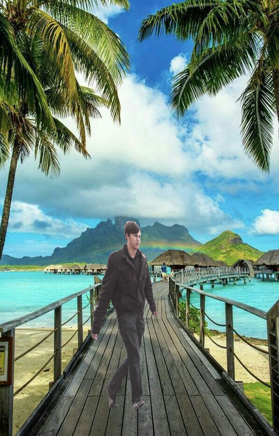

30128-2005 การออกแบบและพัฒนาเว็บไซต์
เว็บไซต์นี้จัดทำขึ้นเพื่อออกแบบและพัฒนาเว็บไซต์ รวมถึงรวบรวมงานในรายวิชาการประยุกต์ใช้โปรแกรมคอมพิวเตอร์กราฟิก
จัดทำโดย นาย ครีย์ปรัชญ์ วัฒณะกูล รหัสนักศึกษา 65301280002
Page 1
งาน 1 งานการเปลี่ยนภาพสีเป็นภาพขาวดำ
คำอธิบายงาน
ให้นักศึกษาหารูปภาพสีมา 1 รูปภาพแล้วทำการเปลี่ยนภาพสีเป็นภาพขาวดำ โดยส่งงานเป็นไฟล์ภาพ 1 ไฟล์ ซึ่งประกอบด้วยภาพสีและภาพขาวดำ
งาน 2 งานการเปลี่ยนภาพสีเป็นภาพโทนซีเปีย
คำอธิบายงาน
ให้นักศึกษาหารูปภาพสีมา 1 รูปภาพแล้วทำการเปลี่ยนภาพสีเป็นภาพโทนซีเปีย โดยส่งงานเป็นไฟล์ภาพ 1 ไฟล์ ซึ่งประกอบด้วยภาพสีและภาพโทนซีเปีย
งาน 3 งานการใช้งานเลเยอร์
คำอธิบายงาน
1. หารูปภาพสีมา 1 รูปภาพ (ภาพที่มีพื้นหลังเป็นท้องฟ้า) 2. หารูปภาพสีท้องฟ้ามา 1 รูปภาพ 3. ทำการเปลี่ยนเลเยอร์พื้นหลังรูปที่ 1 ด้วยรูปที่ 2
งานเทคนิคที่ 1 การนำวัตถุออกจากฉากหลัง (Magic Wand Tool)
คำอธิบายงาน
ให้นักศึกษา 1. หารูปภาพสีบุคคล 2. หารูปภาพสีวิวธรรมชาติ นำรูปบุคคลในรูปภาพที่ 1 มาใส่ในรูปภาพที่ 2

งานเทคนิคที่ 2 การย้ายวัตถุไปยังฉากหลังอื่น ๆ
คำอธิบายงาน
ให้นักศึกษา 1. หารูปภาพสีบุคคล 2. หารูปภาพสีวิวธรรมชาติ นำรูปบุคคลในรูปภาพที่ 1 มาใส่ในรูปภาพที่ 2

งานเทคนิคที่ 3 การกำจัดตาแดงบนภาพถ่าย (Red Eye Tool)
คำอธิบายงาน
ให้นักศึกษา 1. หารูปภาพสีบุคคลที่มีตาแดง 2. กำจัดตาแดงบนภาพถ่าย ส่งงานเป็นไฟล์ภาพ 1 ไฟล์
งานเทคนิคที่ 4 การกำจัดสิ่งรุงรังบนภาพออกไป
คำอธิบายงาน
ให้นักศึกษา 1. หารูปภาพสี เช่น ภาพถ่ายสีท้องฟ้าที่เห็นสายไฟ 2. กำจัดสิ่งรุงรังบนภาพออกไป ส่งงานเป็นไฟล์ภาพ 1 ไฟล์
งานเทคนิคที่ 5 การลบริ้วรอย (Patch Tool)
คำอธิบายงาน
ให้นักศึกษา 1. หารูปภาพสีบุคคลที่มีใบหน้าเป็นริ้วรอย 2. ลบริ้วรอย ส่งงานเป็นไฟล์ภาพ 1 ไฟล์
งานเทคนิคที่ 6 การปรับฉากหลังให้เบลอ
คำอธิบายงาน
ให้นักศึกษา 1. หารูปภาพสีบุคคลที่มีฉากหลัง 2. ปรับฉากหลังให้เบลอ ส่งงานเป็นไฟล์ภาพ 1 ไฟล์
งานเทคนิคที่ 7 การบิดภาพเพื่อนำไปวางบนวัตถุ
คำอธิบายงาน
ให้นักศึกษา 1. หารูปภาพสีแก้วน้ำ 2. หารูปภาพสีตราสัญลักษณ์ 3. นำรูปภาพสีตราสัญลักษณ์มาวางบนรูปภาพสีแก้วน้ำ

งานเทคนิคที่ 8 การบิดโครงร่าง
คำอธิบายงาน
ให้นักศึกษา 1. หารูปภาพสีแฟลชไดรฟ์ 2. บิดโครงร่าง ส่งงานเป็นไฟล์ภาพ 1 ไฟล์

งานเทคนิคที่ 9 การปรับสีท้องฟ้า
คำอธิบายงาน
ให้นักศึกษา 1. หารูปภาพสีวิวธรรมชาติที่เห็นท้องฟ้า 2. ปรับสีท้องฟ้า ส่งงานเป็นไฟล์ภาพ 1 ไฟล์

งานเทคนิคที่ 10 การปรับแนวเส้นที่ลาดเอียงให้ตรง
คำอธิบายงาน
ให้นักศึกษา 1. หารูปภาพสีวิวทะเลที่เห็นเส้นขอบฟ้าที่ลาดเอียง 2. ปรับแนวเส้นที่ลาดเอียงให้ตรง

กดเพื่อไปหน้าถัดไป >>